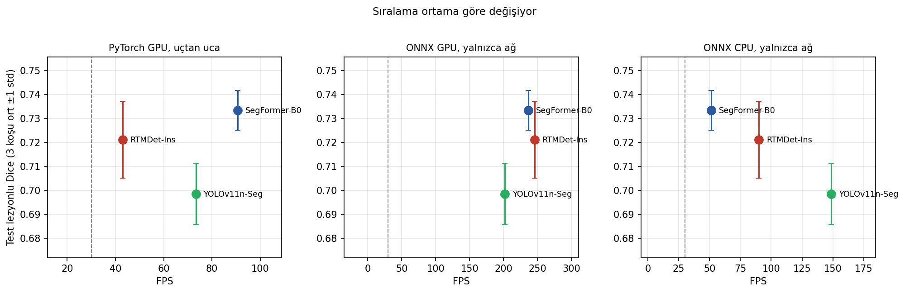
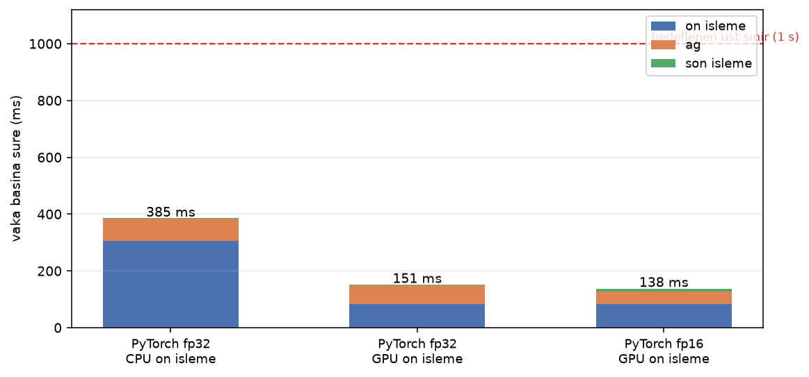

- Tür
- Medikal görüntü analizi
- Durum
- Staj çalışması
- Kapsam
- Mamografi, ultrason, MR
- Yığın
- PyTorch, TensorRT
Medikal Görüntüde Tespit, Segmentasyon ve Gerçek Zamanlı Çıkarım
PeraSoft stajında mamografi, meme ultrasonu ve beyin MR verilerinde tespit, segmentasyon ve sınıflandırma modelleri geliştirdim. Beş ayrı alt proje, her biri kendi ölçüm protokolü ve sonuç raporuyla yürütüldü.
Kitle lezyonu tespitinde RF-DETR, YOLO11 ve YOLO26'yı aynı veri bölünmesiyle karşılaştırdım; RF-DETR mAP@50 0.7551 ve 0.815 duyarlılıkla öne çıktı. Meme yoğunluğu segmentasyonunda altı modeli sabit protokolle eğittim, en iyi sonucu U-Net + ResNet34 verdi (Dice 0.8059).
Ultrason segmentasyonunda üç mimariyi üçer tohumla, toplam dokuz koşuda ölçtüm. SegFormer-B0 90.7 FPS ile gerçek zamanlı hattı taşıyor ve YOLOv11n-Seg'e üstünlüğü istatistiksel olarak anlamlı çıktı (+0.035 Dice, p = 0.003).
MR inme segmentasyonunda önce zamanın nereye gittiğini ölçtüm. Sürenin dörtte üçü ön işlemeye gidiyordu; yeniden örnekleme ve beyin maskesini GPU'ya taşıyınca vaka başına süre 385 ms'den 138 ms'ye indi. ONNX ve TensorRT izole ölçümde hızlı görünmelerine rağmen gerçek hatta kazanç vermediği için yığından çıkardım.


PyTorch / RF-DETR / SegFormer / U-Net / ONNX / TensorRT / Albumentations